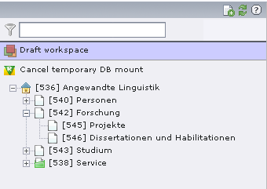

Bug #3096
Workspace and temporary DB-Mount on top of pagetree messy
| Status: | Accepted | Start date: | 2009-04-15 | |
|---|---|---|---|---|
| Priority: | Should have | Due date: | ||
| Assigned To: | - | % Done: | 0% |
|
| Category: | Inconsistency | |||
| Target version: | - | |||
| Tags: |
Description
Problem
If you are working in a workspace other than LIVE the workspace icon + the label of your current workspace enclosed in
brackets shown on top of the pagetree. A click on the icon leads you to the 'Workspace Manager', the title is not linked.
If you have 'Mount as treeroot activated' the link to show the full tree again is shown on top of the pagetree (below
the workspace if that is active as well). Here you have to click on the title, the icon is not linked. The icon is an
info bubble and not the icon you see in the context menu under 'More options' which itself has the wrong size (14x14
instead of 16x16). To make things worse the path of the current treemount is shown below cropped to unreadability. Who needs a path info here? You know where you are after you mounted a part of the tree, right?
In addition the whole stuff is badly aligned and there is no space between the icons and the labels.
Solution:
1) For the workspace part
Let the link wrap both the icon and the label.
Leave out the brackets around the label as they do not tell us anything and only cause uneccessary noise.
Add a margin-right of a few px to the image.
2) For the treeroot part
Let the link wrap both the icon and the label.
Let us have a new icon in the correct size.
Leave out the path info as it is superfluous here and unreadable anyways
3) Alignment and spacing
Align the icon to the treefilter icon in docheader.
Put a margin-right to the icons to achieve a space between icon and label.
Have a look at the before-after-screenshots to see the effect.
Note: placeasroot.gif has to go into typo3/gfx/
pagetree-workspace-treeroot-after.png (9 kB)
{kind=link}
pagetree-workspace-treeroot-before.png (9.3 kB)
{kind=link}
placeasroot.gif (369 Bytes)
{kind=link}
10904-pagetree-workspace-treeroot.patch
 (3.2 kB)
(3.2 kB)
mount-virtual-tree-root.png - Mount Virtual Tree Root via Content Menu (75.7 kB)
{kind=link}
close-virtual-tree-root.png - Close Virtual Tree Root via Top Dialog in the Tree Window (30.7 kB)
{kind=link}
pagetree-root.png - Root Node Icon (409 Bytes)
{kind=link}
mount-virtual-roottree.png - Mount as Virtual Root Node Icon (408 Bytes)
{kind=link}
screenshot.png - Screenshot (39.6 kB)
{kind=link}
forge-3096.diff
- Patch
(4.8 kB)
unmount-tree-root.png (92.9 kB)
{kind=link}
History
#1 Updated by Uschi Renziehausen over 6 years ago
- File placeasroot.gif added
#2 Updated by Uschi Renziehausen over 6 years ago
- File 10904-pagetree-workspace-treeroot.patch added
BT-Reference: http://bugs.typo3.org/view.php?id=10904
#3 Updated by Benjamin Mack over 6 years ago
Uschi Renziehausen wrote:
BT-Reference: http://bugs.typo3.org/view.php?id=10904
I don't consider this solution as good, but it's better as before. I agree however, that we need to do something here. If there is an "info" icon and next to it a "cancel...." text, it's unclear that I can cancel this. I want a "cancel" icon (red x?) next to it, instead of the info icon.
#4 Updated by Jens Hoffmann almost 5 years ago
- File mount-virtual-tree-root.png added
- File close-virtual-tree-root.png added
- File pagetree-root.png added
- File mount-virtual-roottree.png added
- Status changed from New to Accepted
- Priority changed from Must have to Should have
- Target version changed from TYPO3 4.3 to TYPO3 4.5 LTS
As it's a core feature now, we need to take care about it, now.
1. The Icon will be updated
2. The Dialog is updated
3. Name should be renamed to "Mount to virtual tree root"
#5 Updated by Jens Hoffmann almost 5 years ago
All Images ...
pagetree-workspace-treeroot-after.png

pagetree-workspace-treeroot-before.png
placeasroot.gif
mount-virtual-tree-root.png
close-virtual-tree-root.png
pagetree-root.png
mount-virtual-roottree.png
#6 Updated by Steffen Gebert almost 5 years ago
- File screenshot.png added
- File forge-3096.diff added
Renamed it to "virtual tree mount". I would ignore the for the moment, before tree is refactored. Are you okay with "Exit virtual tree mount"?
#7 Updated by Jens Hoffmann almost 5 years ago
Why cant we replace the Icon in the Context Menu?
Wording:- "Mount as virtual tree root"
- "UnMount virtual tree root"
- The Dialog there is strange "INFO" is the wrong message
- I will create a small visual for that case.
#8 Updated by Jens Hoffmann over 4 years ago
- File unmount-tree-root.png added
My suggestion:
Greez Jens
#9 Updated by Jens Hoffmann over 2 years ago
- Target version deleted (
TYPO3 4.5 LTS)